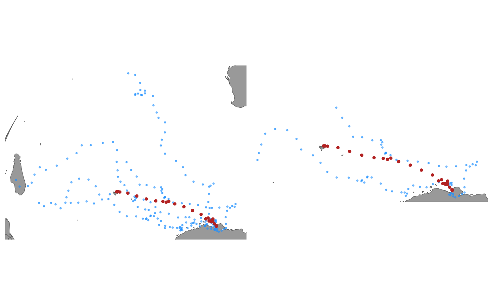

This function calculates the similarity between the simulations
generated by simfit and the observed path used in the fG_ssm fit,
and returns a simfit object containing the most similar tracks based on
a user specified quantile.
sim_filter(trs, keep = 0.25, flag = 2)a simfit object
the quantile of flag values to retain
the similarity flag method (see details)
a simfit object containing the filtered paths
flag = 1 will use an index based on Hazen (2017)flag = 2 (the default) will use a custom index
Hazen et al. (2017) WhaleWatch: a dynamic management tool for predicting blue whale density in the California Current J. Appl. Ecol. 54: 1415-1428 https://doi.org/10.1111/1365-2664.12820
## fit crw model to Argos LS data
fit <- fit_ssm(sese1, vmax = 4, model = "crw", time.step = 24)
#> fitting crw...
#>
pars: 0 0 0 0
pars: -0.08444 -0.6562 -0.74977 0.01049
pars: 0.60691 -0.30123 -1.21402 0.43536
pars: 0.13025 -0.54597 -0.89394 0.14242
pars: 0.26113 -0.78913 -0.79861 0.2477
pars: 0.46583 -0.63521 -0.89295 0.3958
pars: 0.53372 -0.75758 -0.89446 0.673
pars: 0.61565 -0.70933 -0.9104 0.5513
pars: 0.61565 -0.70933 -0.9104 0.5513
## generate 10 simulated paths from ssm fit
trs <- simfit(fit, what = "predicted", reps = 10)
## filter simulations and keep paths in top 25% of flag values
trs_f <- sim_filter(trs, keep = .33, flag = 2)
## compare unfiltered and filtered simulated paths
plot(trs) | plot(trs_f)
